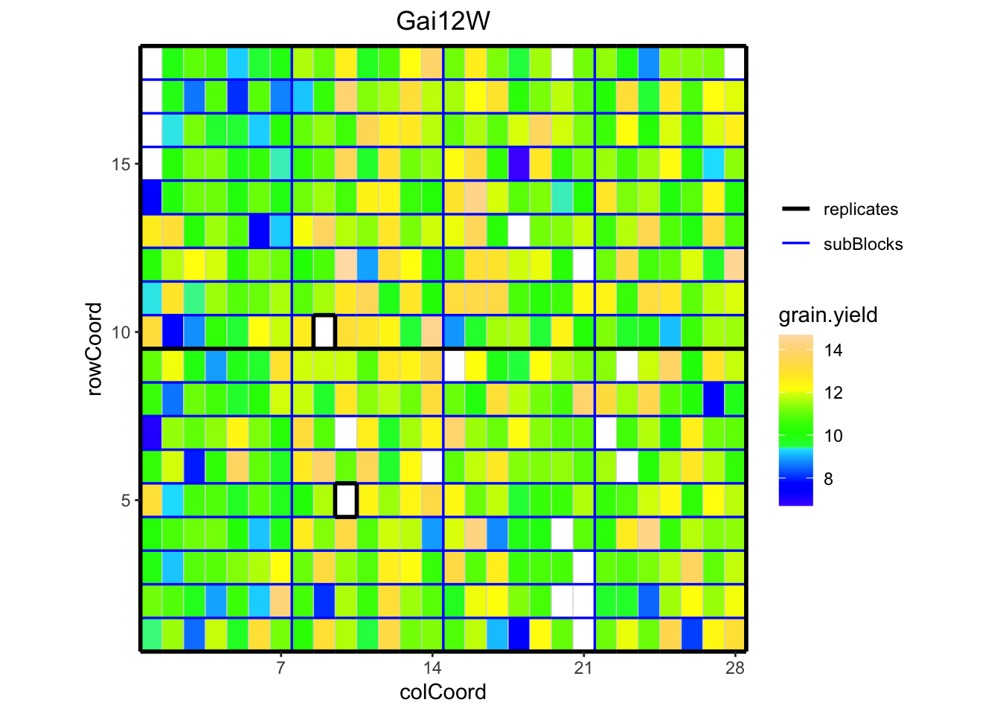
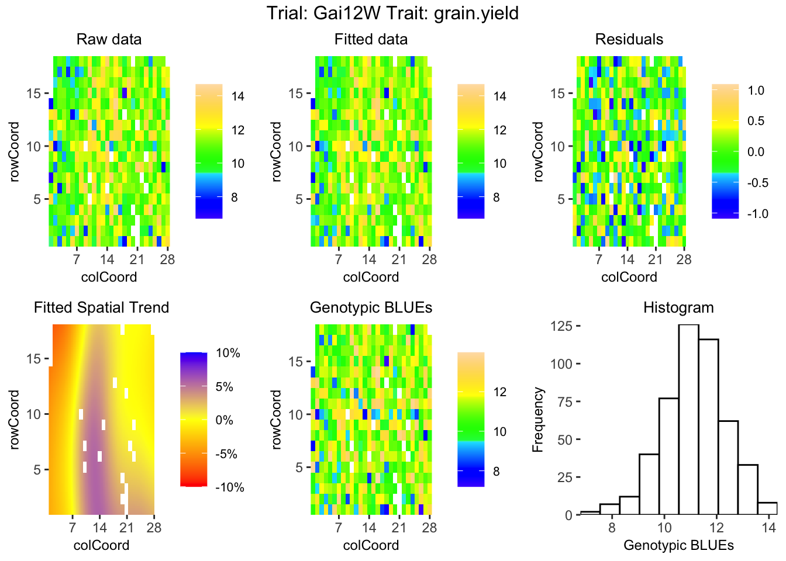

En el fitomejoramiento, el objetivo central es identificar y seleccionar genotipos superiores para mejorar sus valores fenotípicos. Sin embargo, dado que el ambiente también afecta al fenotipo, no existe una correspondencia perfecta entre lo que vemos en el campo y la carga genética real de la planta. Cuando realizamos ensayos en múltiples localidades y años (MET), el reto no es solo ver qué variedad rindió más, sino entender qué parte de ese rendimiento se debe realmente a la genética y qué parte fue simple “ruido” ambiental. Aquí es donde entra la Heredabilidad (\(H^2\)).
Si alguna vez has tenido dudas sobre qué fórmula usar o cómo interpretar un valor bajo, este post desglosa los conceptos y métodos esenciales para llevar tus análisis al siguiente nivel.
1. ¿Qué es realmente la Heredabilidad?
La heredabilidad cuantifica cuánto de la variación que observamos en el campo (Varianza Fenotípica) se debe realmente a las diferencias genéticas entre las plantas. La heredabilidad expresa el grado de correspondencia entre el valor fenotípico y el genotípico. Técnicamente, es el porcentaje de la varianza fenotípica que se puede atribuir a las diferencias en el valor genotípico entre los individuos (Plant & Soil Sciences eLibrary 2026).
Matemáticamente, heredabilidad en sentido amplio, se define como la proporción de la varianza genotípica respecto a la varianza fenotípica total:
\[H^2 = \frac{\sigma^2_G}{\sigma^2_P}\]
Donde:
\(\sigma^2_G\): Varianza Genotípica.
\(\sigma^2_P\): Varianza Fenotípica total.
Nota Práctica: Si obtienes un valor de \(H^2 = 0.70\), significa que el 70% de las diferencias que observas en tu ensayo son estadísticamente heredables. El 30% restante corresponde a factores ambientales o error de medición.
¿Qué estamos midiendo realmente?
Aunque existen muchas definiciones, todas convergen en un punto: cuantificar la señal genética a partir de las mediciones del fenotipo. En términos prácticos, la heredabilidad nos dice qué proporción de la diferencia que observamos en el campo es atribuible a los genotipos. Es el motor de la ganancia genética: sin una comprensión clara de la heredabilidad, es imposible desarrollar variedades de manera oportuna que satisfagan las necesidades de agricultores y consumidores.
2. Impacto en la Selección: ¿Por qué es tu brújula?
La facilidad para mejorar un rasgo agronómico depende de qué tan “limpia” sea su señal genética.
Comparativa de Rasgos (Ejemplo en Maíz)
Tipo de Rasgo
Ejemplo Práctico
Heredabilidad Esperada
Facilidad de Selección
Cualitativo
Color de flor o grano
Muy Alta (> 0.90)
Muy Fácil (Selección visual)
Cuantitativo Simple
Días a floración
Alta (0.50 - 0.70)
Moderada
Cuantitativo Complejo
Rendimiento de grano
Baja (< 0.30)
Difícil (Requiere METs rigurosos)
Si intentas seleccionar por rendimiento basándote en la evaluación visual de una sola planta en una única localidad, estás apostando a la lotería ambiental.
3. Derribando Mitos: Lo que la Heredabilidad NO es
Para aplicar este concepto correctamente en tu programa, debemos evitar estos cuatro sesgos comunes:
“Indica qué porcentaje del rasgo es genético”: Falso. Una \(H^2\) de 0.40 significa que el 40% de la variación en la población se debe a los genes, no que el 40% de la anatomía de la planta sea “genética”.
“Baja heredabilidad significa ausencia de control genético”: Error. Un rasgo puede estar 100% controlado por genes, pero si no hay variación genética en tu población (todas las plantas tienen los mismos alelos para ese rasgo), la heredabilidad será 0.
“Es un valor fijo y universal”: No. Depende estrictamente de cómo se mide el rasgo, en qué ambiente se mide y qué germoplasma se evalúa. Debe reestimarse a intervalos regulares.
“Heredabilidad baja implica diferencias genéticas pequeñas”: No necesariamente. Puede deberse simplemente a que el error ambiental de tu ensayo fue masivo (mala nivelación del terreno, plagas descontroladas, etc.).
4. Métodos de Cálculo: De la Teoría a la Práctica
En los Ensayos Multi-ambientales (MET), los datos rara vez son perfectos. Suele haber parcelas perdidas o genotipos que no se sembraron en todas las localidades.
El Método Cullis (Recomendado por EiB)
Es el estándar de oro actual para programas de mejoramiento modernos. Maneja de forma excelente los datos desbalanceados (comunes cuando se pierden parcelas o no todos los genotipos están en todas las localidades) utilizando la varianza de los BLUPs (Mejores Predictores Lineales Insesgados) y su error estándar promedio para aproximar la variación no genética (Covarrubias-Pazaran 2019).
La fórmula de Cullis ajusta la heredabilidad en función de la precisión real de las comparaciones:
\(\bar{\nu}^{BLUP}_{\Delta}\): Promedio de la varianza de la diferencia entre los BLUPs.
\(\sigma^2_g\): Varianza Genotípica estimada por el modelo mixto.
Guía Técnica en R
statgenSTA es un paquete de R que proporciona funciones para el análisis fenotípico de ensayos agrícolas de campo utilizando modelos mixtos con y sin componentes espaciales (van Rossum 2025).
# 1. Cargar la librería# Si no la tienes instalada, ejecuta antes: install.packages("statgenSTA")library(statgenSTA)# 2. Cargar los datos de prueba incluidos en el paquetedata("dropsRaw")# 3. Crear el objeto TD (Trial Data)# Este paso es clave: mapea las columnas de tu Excel/CSV a la nomenclatura estándar del paquetedropsTD <-createTD(data = dropsRaw,genotype ="Variety_ID",trial ="Experiment",repId ="Replicate", # RepeticionessubBlock ="block", # Bloques incompletosrowCoord ="Row", # Coordenadas espaciales de filacolCoord ="Column") # Coordenadas espaciales de columna## Plot the layout for Gai12W, show raw data for grain yield.plot(dropsTD, trials ="Gai12W", traits ="grain.yield")

# 4. Ajustar el Modelo Mixto para un ensayo específico (ej. la localidad 'Gai12W')# ATENCIÓN: Para calcular la heredabilidad, el genotipo DEBE ajustarse como aleatorio (what = "random")# Usaremos 'SpATS', el motor espacial por excelencia para suavizar la heterogeneidad del campo.modelo_ensayo <-fitTD(TD = dropsTD, trials ="Gai12W",design ="res.rowcol", # Diseño fila-columnatraits ="grain.yield", # Rasgo a analizar: Rendimiento de grano# what = "random", # Genotipos como efecto aleatorioengine ="SpATS")## Spatial plot for the model with genotype fitted as fixed effect.## Display the spatial trend as a percentage.plot(modelo_ensayo, plotType ="spatial", spaTrend ="percentage")

# 5. Extraer la Heredabilidad# Con esta única función, el paquete aplica el método de Cullis sobre los BLUPs generados.resultados_heredabilidad <-extractSTA(modelo_ensayo, what ="heritability")# 6. Mostrar el resultadocat("\nLa Heredabilidad generalizada (Cullis) para el rendimiento en el ensayo Gai12W es:\n")
La Heredabilidad generalizada (Cullis) para el rendimiento en el ensayo Gai12W es:
print(resultados_heredabilidad)
trial grain.yield
1 Gai12W 0.84
## Set nBest to 5 to limit the output to the best 5 genotypes.summary(modelo_ensayo, nBest =5)
Summary statistics
==================
Summary statistics for grain.yield in Gai12W
grain.yield
Number of observations 483.0
Number of missing values 19.0
Mean 11.23
Median 11.22
Min 6.71
Max 14.68
First quantile 10.38
Third quantile 12.09
Variance 1.845
Estimated heritability
======================
Heritability: 0.84
Predicted means (BLUEs & BLUPs)
===============================
Best 5 genotypes
BLUEs SE BLUPs SE
Lo1261 13.98285 0.47144 13.65848 0.4329
Lo1253 13.88760 0.47244 13.44540 0.4350
Lo1223 13.71634 0.47173 13.28001 0.4337
DKMBST 13.63513 0.47242 13.23844 0.4345
HMV5422 13.56305 0.68282 13.02194 0.5785
Otros Métodos
Método de Piepho: Ideal cuando trabajas con BLUEs (estimadores de efectos fijos). Requiere ajustar dos modelos (uno fijo y uno aleatorio) para obtener la varianza genética y el error estándar promedio.
Método Estándar: Asume datos perfectamente balanceados (\(H^2 = \sigma^2_G / (\sigma^2_G + \sigma^2_E / r)\)). Tiende a sobreestimar el valor si hay datos faltantes, por lo que su uso está decayendo en ensayos reales.
Conclusión
La heredabilidad no es solo un número para publicar; es la métrica que valida la calidad de tu manejo agronómico y tu capacidad de selección. Por tanto, entender la heredabilidad es entender la precisión de tu programa de mejoramiento. Al adoptar métodos estadísticos robustos como el de Cullis, te aseguras de que tus decisiones de selección no sean un espejismo ambiental, sino una señal genética real que se traducirá en mejores variedades para los agricultores.
References
Covarrubias-Pazaran, Giovanny E. 2019. Heritability: Meaning and Computation. Edited by Valentin Wimmer, Emily Ziemke, Johannes Martini, and Sam Storr. CGIAR Excellence in Breeding Platform (EiB). https://excellenceinbreeding.org/toolbox/tools/heritability.
@online{santos2026,
author = {Santos, Franklin},
title = {Heredabilidad: {El} {Puente} Entre El Fenotipo y El Exito En
El Fitomejoramiento},
date = {2026-03-04},
url = {https://franklinsantos.com/posts/heritability/},
langid = {en}
}
![]()